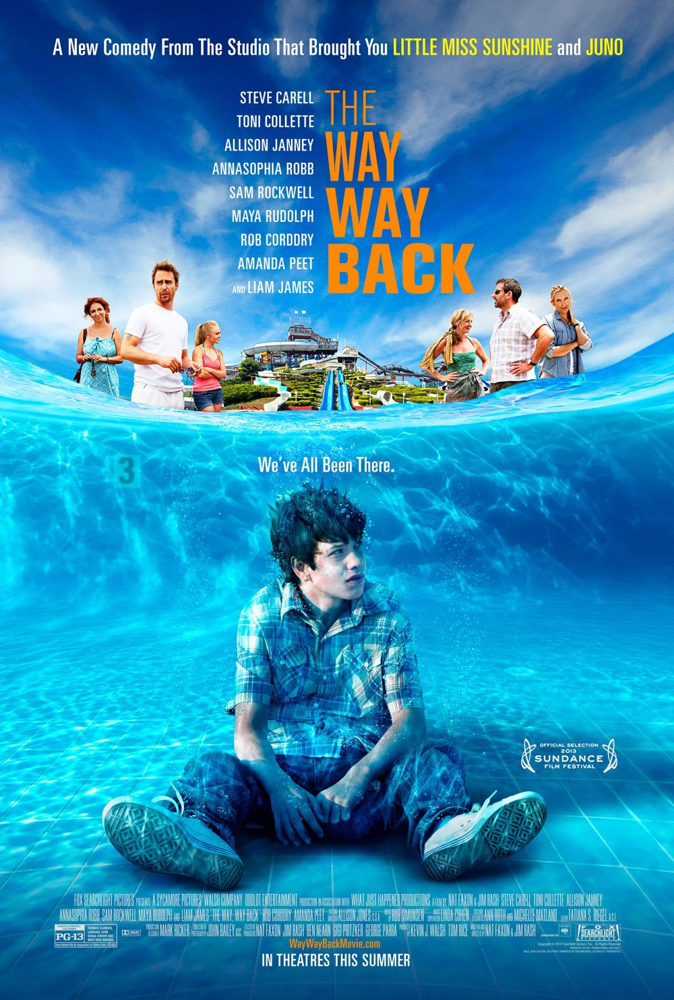

The Way Way Back
About The Way Way Back
Home
Duncan is a 14 year old boy who was dragged along by his mother to a vaction with her boyfriend Trent. Duncan endures emotional harasment due to the insecurity of Trent. Throughout the Movie Duncan goes of to find his own path and face many lessions about how family doesnt have to be the one your areassigned to but the one you choose.
Director: Nat Faxon & Jim Rash
Company Credits: Sycamore Pictures, The Walsh Company, and OddLot Entertainment
Genres: Comedy-Drama
Rating: 7.4/10 on IMDB and a 84% on Rotten Tomatos
Run time: 1h 44m